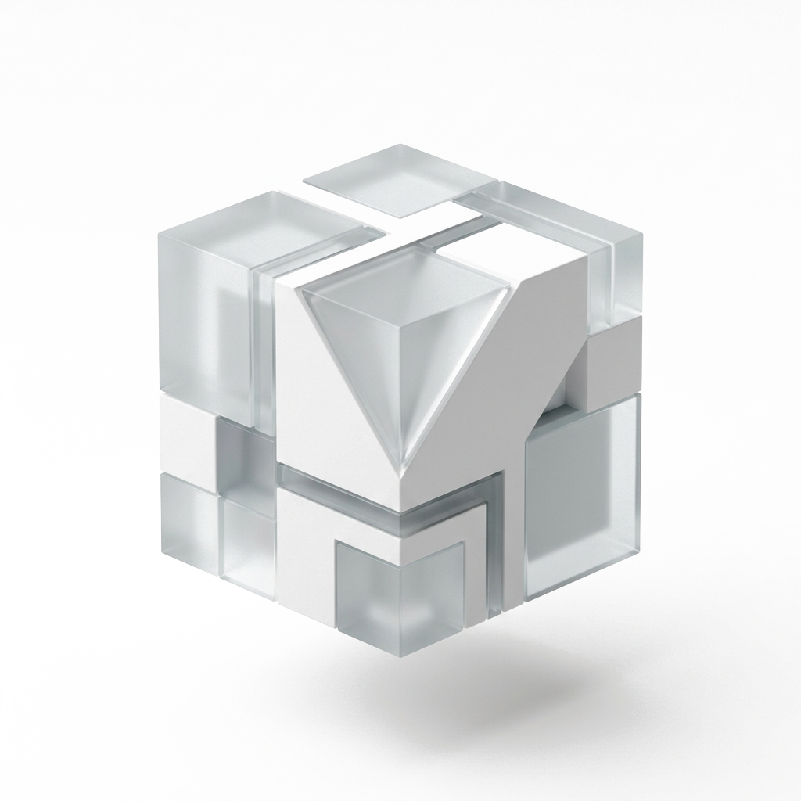

LIVE DEMO
MonitoringTrash
Sistem pemantauan tempat sampah pintar berbasis IoT dengan visualisasi level kapasitas real-time, status sensor, dan telemetri baterai terintegrasi.
“Seorang dari keluarga yang biasa tetapi memiliki mimpi yang luar biasa.” Siswa Rekayasa Perangkat Lunak di SMK Negeri 2 Yogyakarta & developer di @SUCODE-TEAM. Berfokus pada pengembangan aplikasi web modern, dashboard IoT pintar, dan sistem otomasi cerdas.
Hasil karya nyata yang dikembangkan dan dipublikasikan di akun GitHub resmi Isro.
Sistem pemantauan tempat sampah pintar berbasis IoT dengan visualisasi level kapasitas real-time, status sensor, dan telemetri baterai terintegrasi.
Mesin pencari pintar dengan UI minimalis, filter kategori cerdas (Tech, AI, Science), dan integrasi pencarian cepat berkecepatan tinggi.
Aplikasi web interaktif untuk visualisasi prototipe 3 dimensi dengan kontrol sudut 360°, mode wireframe render, dan manajemen model digital.
Sistem asisten virtual berbasis Python dengan kemampuan pengenalan suara (speech recognition), otomasi tugas harian, dan respons cerdas.
Pengembangan konsep portal website interaktif untuk SMK Negeri 2 Yogyakarta yang mengedepankan informasi jurusan dan kemudahan navigasi siswa.
Sistem manajemen dan penilaian seleksi Lomba Kompetensi Siswa (LKS) bidang Web Technologies dengan sistem autentikasi dan rekap nilai otomatis.
End-to-end digital solutions tailored to modern standards, from hardware telemetry to intuitive web interfaces.
Membangun website responsif, single-page application, dan portal interaktif dengan TypeScript, JavaScript, HTML5, dan CSS modern tanpa bloatware berlebih.
Menghubungkan mikrokontroler dan sensor fisik ke cloud dashboard dengan integrasi data real-time, grafik kapasitas cerdas, dan sistem notifikasi instan.
Mengembangkan asisten kecerdasan buatan berbasis voice recognition, otomatisasi tugas rutin, data scraper, dan skrip produktivitas dengan ekosistem Python.
Perancangan basis data relasional (MySQL/PHP), kontrol versi Git kolaboratif, deployment terotomasi ke Vercel/GitHub Pages, dan struktur kode modular.
Isro adalah developer muda berdedikasi tinggi dari SMK Negeri 2 Yogyakarta dengan antusiasme besar dalam memecahkan masalah logika, eksplorasi IoT, dan inovasi web modern.
BASED ON 21+ REPOSITORIES & REAL PROJECTS
Alur kerja sistematis dari ide konseptual hingga deployment produk digital berkinerja tinggi.
Menganalisis kebutuhan pengguna, batasan teknis, dan tujuan utama sistem sebelum memulai pembuatan kode.
Menentukan arsitektur data, pemilihan teknologi (TypeScript/Python/PHP), serta wireframe antarmuka.
Membuat komponen UI modern dengan estetika minimalis, responsivitas mobile-desktop, dan interaktivitas tinggi.
Pengkodean bersih (clean code), modularitas fungsi, pengujian performa, dan manajemen commit Git terstruktur.
Deployment langsung ke produksi (Vercel/GitHub Pages), dokumentasi README lengkap, dan pemeliharaan berkala.
Punya ide proyek, tawaran magang / kerja sama tim, atau sekadar ingin berdiskusi seputar pemrograman? Saya sangat senang terhubung dengan Anda!
